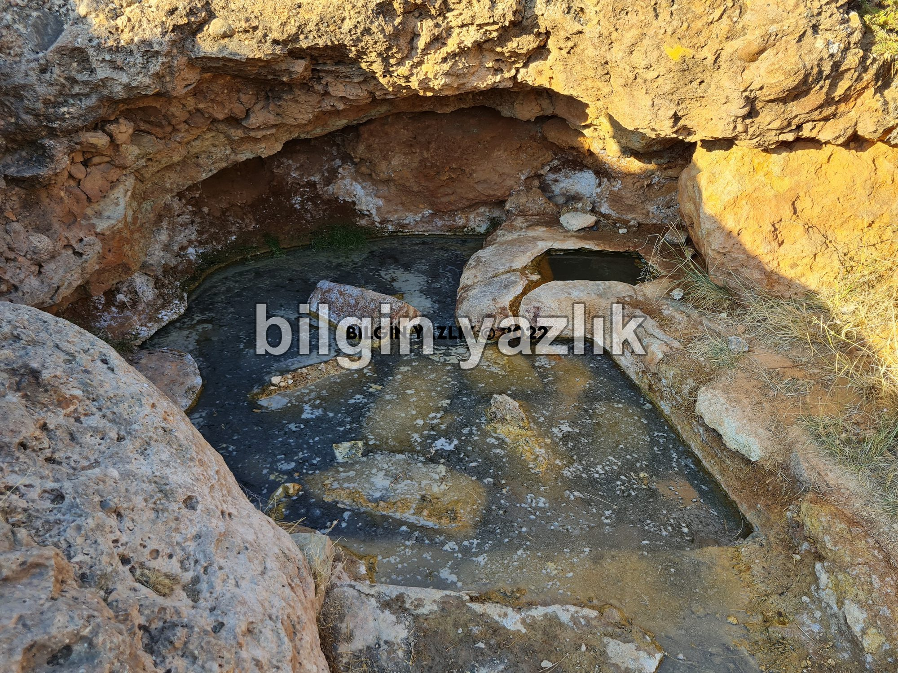
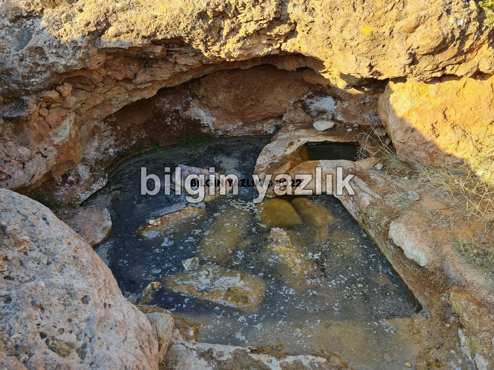
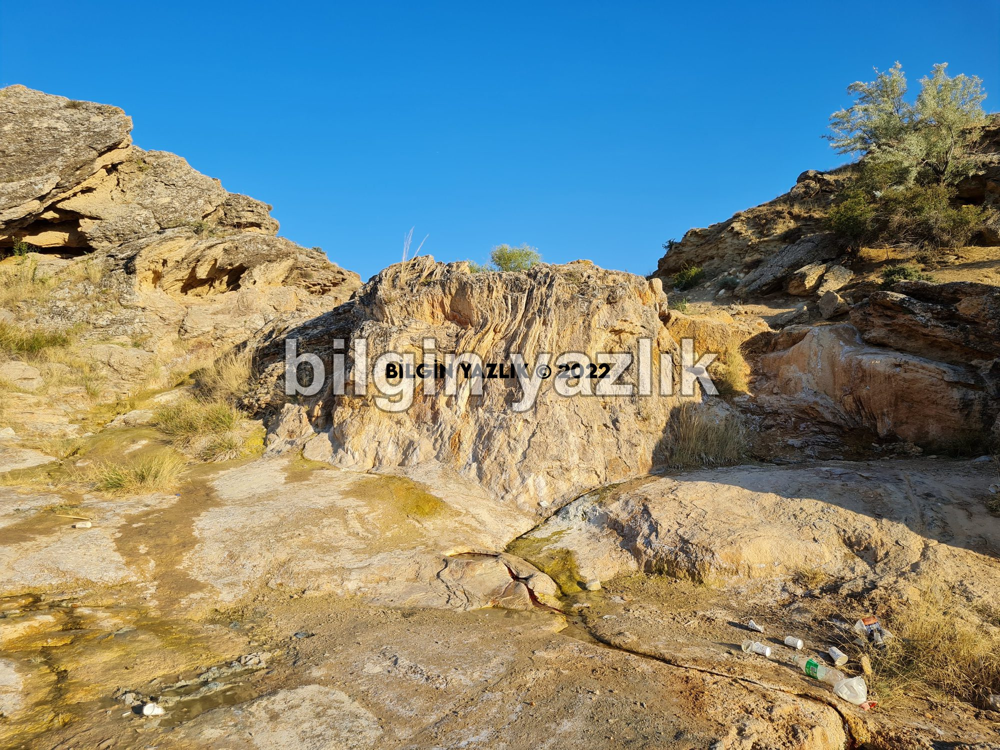
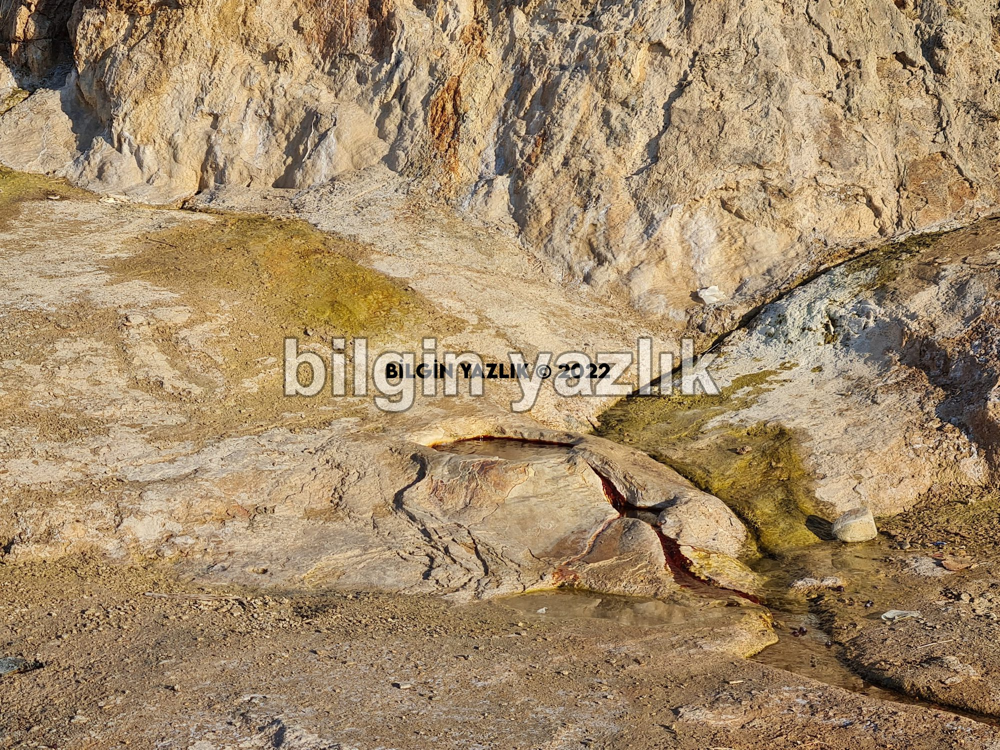
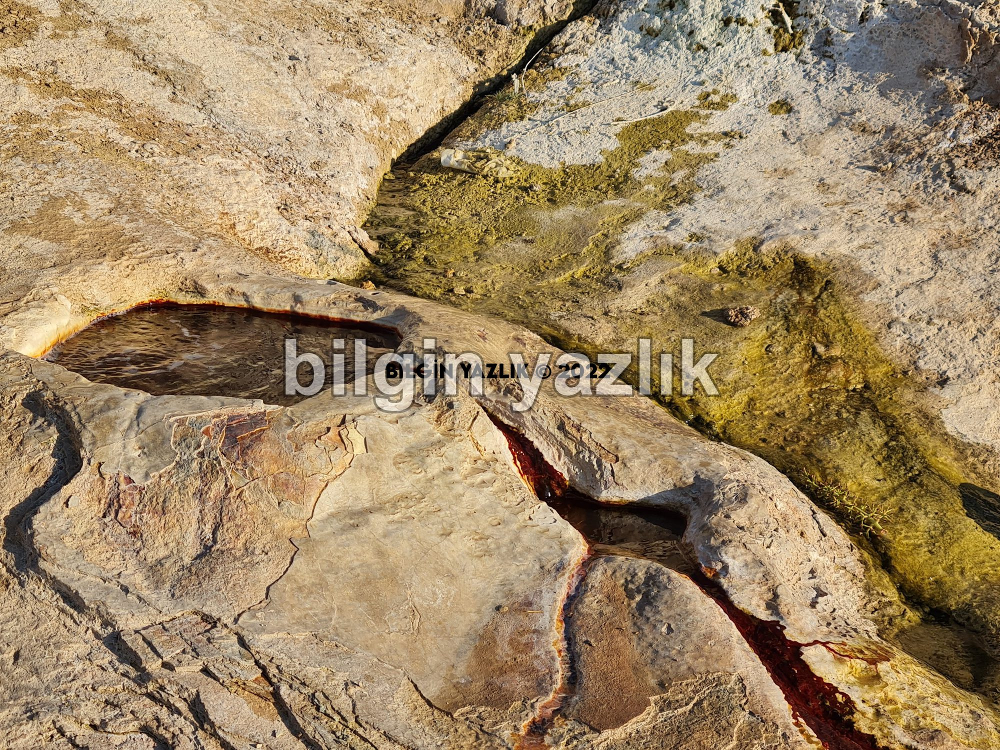
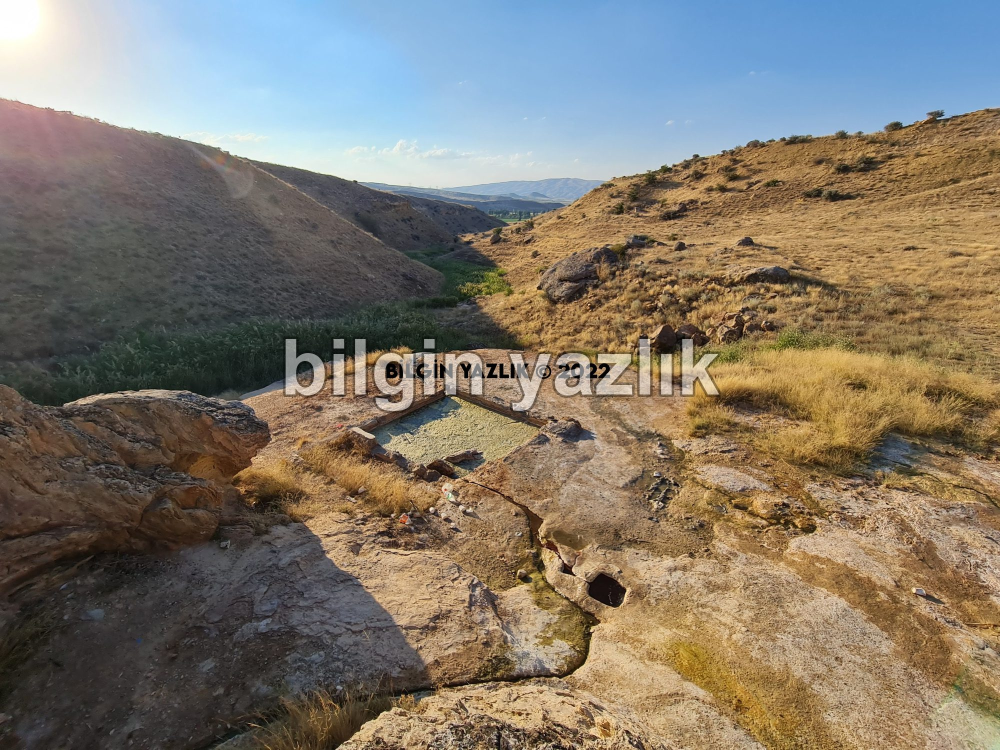

Kapadokya · 22 Ağustos 2022
Ürgüp Maden Suyu Kaynağı
Ürgüp TOKİ’lerin doğusunda yer alan bu doğal maden suyu kaynağı çok tuzlu bir su bulunduruyor.
Suyun herhangi bir analizi yapılmış değil bu nedenle içilmemesini tavsiye ederim.
Su, birkaç noktadan çıkıyor ve küçük havuz şeklinde birkaç noktada toplanıyor.
Suyun çıktığı noktada kabarcıklar şeklinde gaz çıkışı da gözlemleniyor.
Suyun sıcaklığı 15 derece civarında.
Çıktığı bölge kötü kokuyor ve insanlar tarafından çok kirletilmiş, bu nedenle bazı kaynaklarda Boklu İçmece adıyla da geçiyor.






Bu yazı taliyol arşivinden taşınmıştır. · özgün kayıt